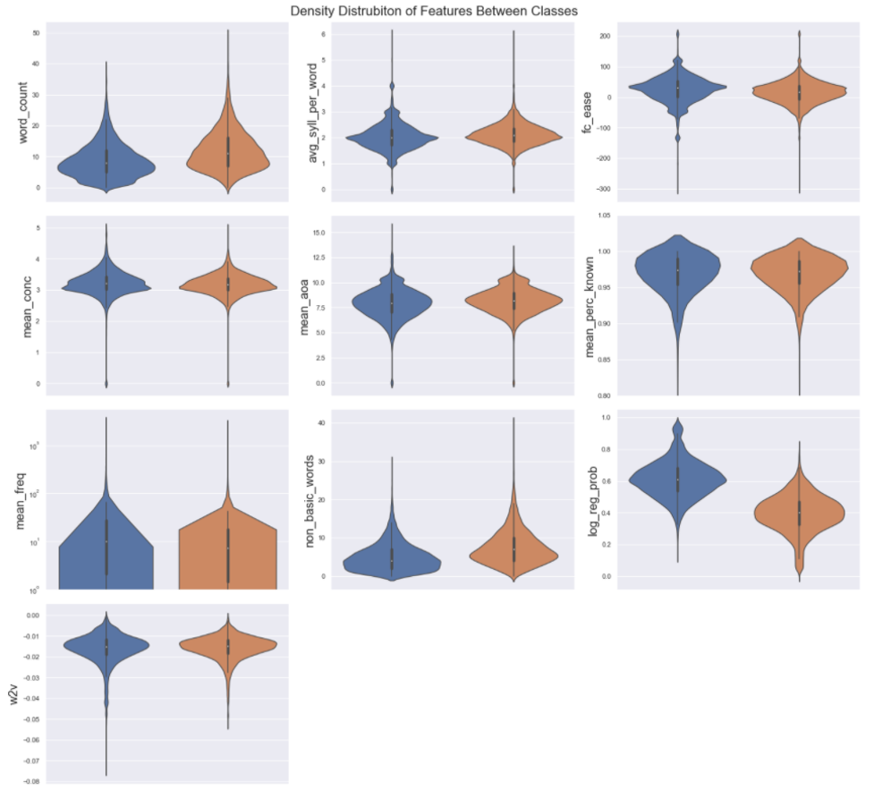
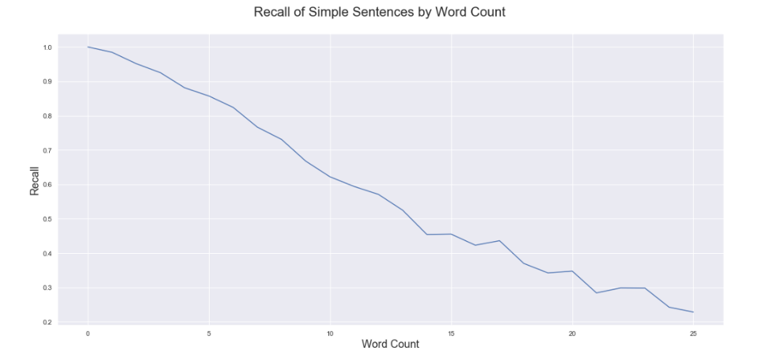

Text Complexity Classifier and Topic Modeling
General Project Approach and Division of Work
For this project, the first published Kaggle dataset for text complexity was analyzed. Both a supervised learning model which would predict text that needed simplification and an unsupervised portion that looked at topic modeling were created and evaluated.
As the project was already split into two major sections, these sections were used to determine the division of work. David Franks worked on the supervised text classifier, while Ermias Bizuwork handled the unsupervised topic modeling, and set up a github repository to help with organization. Each also served as a consultant for any issues that arose in the other’s section.
Supervised Text Classifier
Three Step Approach
For organization the supervised text classifier and predictions were generated across three separate notebooks. In a professional setting, and with more time, the goal would be to turn these three notebooks into a pipeline. The first notebook is the POC (proof of concept) notebook. The goal of the POC notebook was to solidify the feature generation and isolate a single high performing model on the training data using train/test splits. The full training data is in excess of 400,000 rows and can be quite costly for training models and grid searching their parameters. For this reason, through the initial feature generation and model evaluation 20,000 rows were used at random to train, then 20,000 different rows were used at random to test. In text classification tasks, the final performance of the model can be heavily dependent on the size of the training set. Initial train/test splits showed that to be the case here. Once a few promising models were identified on the smaller data set, final model tuning and evaluation was performed on the full training data with a 75/25 train test split.
With feature generation complete and a model and its parameters selected, the Dev (development) notebook was instantiated. The goal of the Dev notebook was to train a final model on 100 percent of the training data. The model and all relevant dictionaries were then output to pickle files. The final notebook, Predict, was written to easily be reformatted to a callable script that would accept two arguments, a text file with rows of text needing classification, and a destination for the predictions. The Predict notebook innately pulls the pickles generated by the Dev notebook, these however could also be passed as arguments if a full pipeline were made.
Feature Generation
Following is a full list of features used. The methodologies by which they were generated can be found in the appendix of this paper.
- Word Count & Average Syllable per Word (word_count, avg_syll_per_word). Syllable counts were generated through a function taking from a stack overflow thread (top answer at this link).
- Flesch-Kincaid Reading Ease Score (fc_ease)
- Mean Word Concreteness Rating (mean_conc)
- Mean Word Age of Acquisition (mean_aoa)
- Mean Word Percent Known (mean_perc)
- Median Word Frequency (mean_freq)
- Count of Non-Basic words (non_basic_words)
- Word2Vec Mean Document Vector (w2v)
- TfIdf Logistic Regression Probability (log_reg_prob)
Evaluation
Feature representation grew in number and complexity through iterations of model testing. The first version had only the word count, syllables and Flesch-Kincaid score. This was seen to have accuracy in lower 60th percentile. Within the models tested, a Random and Gradient Boosting forest were run on every iteration. From these, the feature_importances_ method was used to evaluate the features impact on the model.
As more features were developed, the importance of features was reevaluated, low importance features were often dropped to assess if they were negatively impacting the model, and features thought to be heavily co-linear (e.g. word count and count of non-basic words) were added and removed to assess if they lead contributed to information gain. Once all the non-vector-based features were added, the best model (random forest classifier) had approximately 69 percent accuracy.
Looking to go past that, vector-based representations of the text were assessed. A TfIdf vectorizer was fit to the training data, and its sparse matrix was used to train a logistic regression classifier. This representation had 68.5 percent accuracy on its own.
Given that vector representation and the features representing the attributes of the text came out to equally strong classifiers, through very different methods, it was suspected that if they could be combined, the result would be better than either individually. The TfIdf logistic regression model was employed to predict the probability of class assignment for each row. This probability was then used as an additional feature added to the text attributes. Similarly, a word2vec model was trained and the average document vector was added.
With the two additional features, all models saw increased accuracy. There was a small shift in which a KNN classifier began outperforming the other methods at around 72 percent accuracy when trained on a 75/25 split of the data. Hyperparameter tuning was performed and a final model using 100 nearest neighbors weighted by distance showed the best performance across 10 cross fold validation. This process did add a small gain to accuracy (less the 0.5 percent) and took several hours to complete. Additionally, even with 10 cross fold validations, the recommended parameters from the grid search were not always the same. This indicates that a standard trope of machine learning is true in this case: feature selection heavily outweighs hyperparameter tuning in terms of model accuracy. Even most classifier types performed in a cluster around the 70-72 percent accuracy range with a gradient boosting forest, random forest, k-nearest neighbors, and a second logistic regression classifier all in that range. This also shows that feature importance outweighs model selection in terms of final accuracy, provided the model is appropriate to the data. A gaussian mixture model for instance, only had 49.5 percent accuracy, indicating it failed to capture any of the underlying structure in the data.
Final Feature Importances
Below are violin plots of each feature, split by outcome on 20,000 random rows. The log_reg_prob feature, which represents the probability of class assignment from the logistic regression model run on the TfIdf vectorization, is by far the most influential feature. Feature importance metrics placed this single feature at 0.553 with the next most important feature being the word2vec average document vector at 0.062. Text based features all sat between 0.037 (average syllables per word) and 0.0573 (mean age of acquisition). 
Failure Analysis
With the inexact qualities of language, there were many cases and many reasons why predictions failed. Below are the three most common cases observed.
- Failure of logistic regression probability The log_reg_prob feature was the feature identified with the highest importance. However, it was a probability prediction from a classifier with only 68.5 percent accuracy. The TfIdf methodology can be hard to analyze for failure states, but it would identify texts that had words in common with texts needing to be simplified as also needing simplification.
-Simple sentences with many words and non-basic words General word count and a count of words not seen in the dale_chall file of basic words both entered the model. This may have inadvertently weighted the model to over identify long sentences as needing simplification. This can be seen by flipping the class predictions (simple = 1) and looking at a graph of the recall score by word count. 
- Flesch-Kincaid Ease not heavily correlated Initial thoughts going into this project were that this feature would be highly predictive of text complexity. Early versions of the classifier that relied on only text features had underwhelming accuracy. The final version of the model does not rely heavily on the fc_ease feature and as can be seen in the violin plots above; the distribution across the classes is similar. A lower fc_ease value was still associated with the ‘needs simplification’ class, but this is another spot where it was common for the model to fail. Cases were seen where both the ease was low, but the sentence was simple, and where the ease was high. but the sentence was considered complex.
Part A Discussion
Lessons Learned
It became obvious toward the beginning of evaluation that features relying solely on common text attributes like counts and syllables, were insufficient in capturing the complexity of the text. Flesch-Kincaid Ease was particularly disappointing as a feature.
Adding the additional resources like mean concreteness and age of acquisition helped, but even with those external databases, a model using these features was on par for performance with a tfidf vectorizer and logistic regression all with default parameters. With more time, vectorization methods could be explored further. Pretrained vectorizes could be investigated to see if they perform better.
The issue of word count being too heavily weighted could also be explored, perhaps by changing the count of non-basic words for a percent of non-basic words to avoid strong co-linearity.
Ethical Considerations
Since the articulated goal of the classifier is to identify texts that need to be simplified by Wikipedia staff, there are a few ethical concerns. Containing infrequently used words was a factor in the text being flagged as needing review. Given that there are words associated with cultural practices, it’s not hard to imagine that text revolving around practices seen in minority cultures would be flagged more often.
If this was shown to be the case and review of this classifier in a real-world setting found a disproportionate flagging of articles about minority cultures as needing to be simplified, the classifier would need to be used with a set of criteria seeks to avoid replacing traditional words and proper names with more generic language. Assuring that definitions were given for these words in the text itself may be a way to preserve the words themselves, while promoting understanding of the text. If these words were frequently changed, accusations of historical and cultural sanitation in favor of majority understanding could rightly be levied.
Appendix A:
Explanation of features and how they were created: - Word & Average Syllable per Word (word_count, avg_syll_per_word) While syllable counts were available in the age of acquisition and concreteness rating documents, those documents did not contain a complete list of all words used. Word counts were generated by taking the length of the clean_text column. Syllable counts were generated through a manual function taking from a stack overflow thread (top answer at this link). Syllable count was then used with the word count to calculate average syllables per word. Word and syllable counts were not performed on the lemmatized text as they were intended to reflect more of the original state of the document than the more heavily processed lem_text. Version of syllable and word counts that still contained stop words were tried in models, but those models appeared to be slightly less accurate, potential as a result of the Flesch-Kincaid score discussed below.
-
Flesch-Kincaid Reading Ease Score (fc_ease) Once the word and syllable counts were established, an average syllables per word was calculated for use in a Flesch-Kincaid Reading Ease Score. As many stop words are a single syllable and were removed prior to calculating the average syllables per word in each text, the final flesch-kincaid scores were significantly lower than version that scored with stop words. This version was seen to be slightly more accurate when predicting text complexity, possibly as the remaining words complexity being less diluted by the stop words.
-
Mean Concreteness Rating (mean_conc) Using the dictionary representation of the concreteness rating data source, the function get_mean_conc(text) took the sum of concreteness ratings for words in the text and divided by the number of words in the text. If a word in the text did not appear in the concreteness dictionary, it’s value was imputed using the average concreteness rating within the dictionary.
-
Mean Age of Acquisition (mean_aoa) Using the dictionary representation of the AoA datasource, this was calculated in a manner similar to the mean concreteness. Average age of acquisition for each word was summed, the divided by total words in the text. Words that did not appear in the AoA datasource used the mean age across all words in that datasource. In an attempt to limit the number of missing words, alternative spellings in the AoA datasource were made into their own unique entries within the dictionary.
-
Mean Percent Known (mean_perc) This metric was available from both the AoA and Concreteness Rating datasources. While the AoA source had the large list of words, there were some unique words found in the concreteness ratings. As it had the larger list, the AoA datasource was checked first for percent known values, if the word did not exist there the Concreteness Ratings data source was checked. If a word did not appear in either datasource it was imputed with the average percent known from the AoA datasouce.
-
Median Frequency (mean_freq) Do to the dynamic nature of this measure, revision of the code saw this change to a median metric rather than arithmetic mean. Words were associated with their values in the AoA datasource, missing values were imputed from the median of all values in that datasource.
-
Count of Non-Basic words (non_basic_words) This metric is a sum of non-basic words used in the text. It’s calculated by looking through both the AoA and Concreteness Ratings dictionaries which had non_basic metric entered into them, based on whether the word appeared in the dale_chall file. If a word appears in neither dictionary, it is assumed to be not basic.
-
Word2Vec Mean Document Vector Using the lem_text column, a word2vec vectorizer was trained. From this, the average document vector was used as feature.
-
TfIdf Logistic Regression Probability (log_reg_prob) Early in development, it was noticed that a simple TfIdf vectorizer passed through a logistic regression model with default parameters had relatively high accuracy on its own. Given that TfIdf method is distinct from the text features listed above, it was estimated that combining this method with the other features would be beneficial. However, since the TfIdf vectorizer yields a sparse matrix, it was not readily consumable by models alongside the metrics. A logistic regression model was trained on the test data and was used to predict the probability of the class assignment. This probability was passed as a feature along with those listed above, into the final model. Accuracy improved from approximately 68 – 70 percent for either text features or TfIdf to approximately 74.5 percent when using a two-stage model.